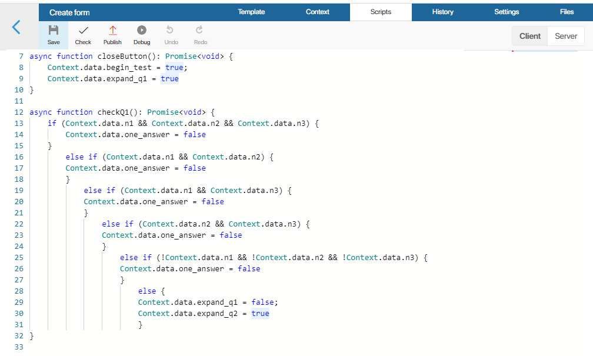

You can make widgets on pages interactive by using scripts.
A Script is a piece of code that describes a widget’s behavior under certain conditions. Scripts use variables, the most common type being Yes/No switch, as most widget actions (hide, show, etc.) are bound to the values of such properties.
Scripts can be:
- Client-side. Executed in a user’s browser.
- Server-side. Executed on the BRIX server.
- Mixed. These scripts are executed on the client side, but they call server methods.
Server-side scripts run regardless of access restrictions to app items. Client scripts are executed with restrictions. For example, when trying to load an item to which the current user does not have access, the client-side code will return an error, while the server-side code will execute successfully. Similarly, when receiving a list of items, the client side will return only those items to which they have access, while the server side will return all items.
In server-side scripts, you can use additional parameters. They allow you to customize the widget and make changes to the script without republishing. You can read more about it in the Additional parameters article.
Scripts for widgets usually don’t require powerful hardware to operate, so we recommend writing them on the client side whenever possible.
Scripts are written in the TypeScript programming language on the Scripts tab of the interface designer.
начало внимание
Using Global or Namespace constants in scripts restricts the export of system components. Read more about it in the Global constants in scripts article.
конец внимание

External dependencies in client-side scripts
In client-side scripts in widgets, you can use JavaScript libraries and custom functions. To do that, go to the Files tab of the interface designer. Upload one or several .js files with the code of the required functions or libraries. On the Scripts tab, use the import declaration to connect the files you added to the source code.
For example, to connect the jQuery library, go to the Files tab and upload a file with the most recent version of the library, for example, jquery-3.6.0.min.js. Then open the Scripts tab, to the client-side script, and add the following declaration in the beginning of the script:
import $ from "jquery-3.6.0.min.js";
Now you can call functions from this library in the script’s code.
Also, client-side scripts allow using functions that are called automatically when displaying a widget or when saving a form. Read more about it in System functions in widgets.
Get data from widgets
The way you can get data from a widget’s context depends on where a widget is located.
Interface widgets
If you are setting up an interface and creating a custom widget, you can access its context using the Context constant. For example:
Context.data.string_1 = 'string value';
If you need to access a system widget placed on a page, you also need to use Context.
Widgets on forms
If you need to access a widget placed on an app form, you need to use the ViewContext constant, as Context in this case grants access to the context of the app itself:
const itemName = Context.data.__name;
ViewContext.data.string_1 = `Name ${ itemName }}`;
Read more about this in BRIX TS SDK, in the Scripts in widgets article.
Call a server method from a client-side script
Not all operations can be performed strictly on the server side or the client side. Sometimes a hybrid approach is necessary. In this case you can implement a client-side script to do part of the work and then call a server script. This approach is mostly used to implement the logic for locking interfaces and sending user notifications.
For example, there may be a script on a server that performs data processing and can access external services:
async function DoSomeWork() : Promise<void> {
// A typical logic of a server-side script
// External calls can be made via `await`
let response = await fetch('https://my-service.mycompany.com/getmydata?token=' + Context.data.secureToken);
Context.data.mySecureData = await response.text();
}
Then, in the code of a client-side script, you can call this method by using the Server.rpc property:
async function onButtonClick() : Promise<void> {
ViewContext.data.blockUI = true;
await Server.rpc.DoSomeWork();
ViewContext.data.blockUI = false;
}
Please note that data between the server and the client is passed only via Context or ViewContext. The method on the server side must have no parameters and has to return Promise. Only then it will appear in the auto-complete list for the client-side script.
You can also call server methods using nested widgets like Button or Code. Read more about it in the Scripts in widgets article in BRIX TS SDK.
Track app events through a client-side script
A widget on a page can display real-time data on app items. For example, you can set up a report that displays the current status of items and new entries in the app without refreshing the page.
To do this, subscribe to the events of item creation, deletion, and change in the report widget and set handler functions for them. This can be done using a client-side script.
Subscribe to an event
To create an event subscription in the app, open the Scripts tab, go to the client-side scripts section and write a script:
await System.events.subscribe()
// Subscribe to the event of creating a new item in the app
.onAppItemCreate(Context.fields.order.app, async (events) => {
const event = events[0];
const order = await event.data.fetch();
// Report data update
updateReportWithNew(order);
},
{
debounce: 0
})
// Subscribe to the event of change of a certain item, including the change of its status
.onAppItemUpdate(item, function(e) => {}, { buffered: 2 })
// Subscription to the event of deletion of a certain item
.onAppItemDelete(item, function(e) => {}, { debounce: 0 })
.all();
Basic parameters:
- The app or item for which events are tracked.
- Event handler is a custom function that is run when an event occurs.
The handler options optional parameters also be used to optimize performance:
buffered. Specify how many events will be accumulated before they are processed. The default is 1.debounce. Set the maximum frequency of handler calls in milliseconds. Please note that if more events are received during the set time than specified in buffered, the last of them are processed and the earlier ones are ignored. For create and delete events, it is recommended to set the value to 0 so that all items are processed. The default value is 50 ms.
Disable handler
Event subscriptions are active as long as the page with the widget for which they are configured is open. When you switch to another page, they are automatically disabled.
You can also disable an event handler when you no longer need to use it. To do this, use the following methods in the client script:
// Disable the `onDeleteHandler` handler that was used for the event of item deletion
await System.events.unsubscribe().onAppItemDelete(item, onDeleteHandler).all();
...
// Disable all handlers for the event of item change
await System.events.unsubscribe().onAppItemUpdate(item).all();
...
// Cancel all subscriptions to events within the widget
await System.events.unsubscribe().all();
Found a typo? Select it and press Ctrl+Enter to send us feedback